Comencemos con un corte de carne: los más populares, por excelencia, son el bife, el vacío, la entraña, el matambre y la colita de cuadril.
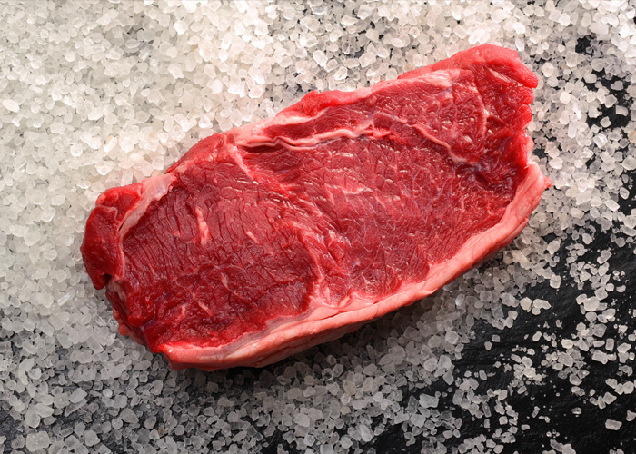
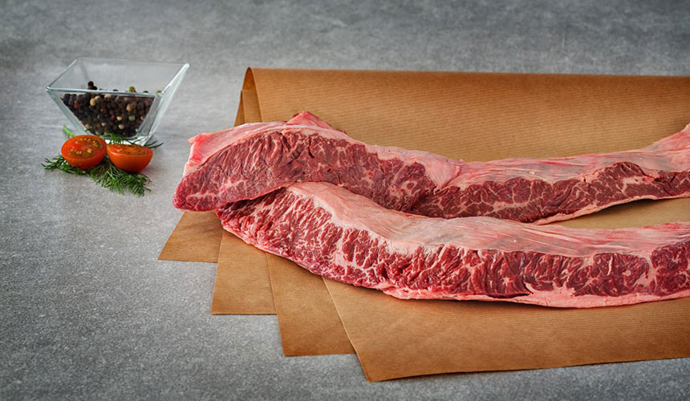
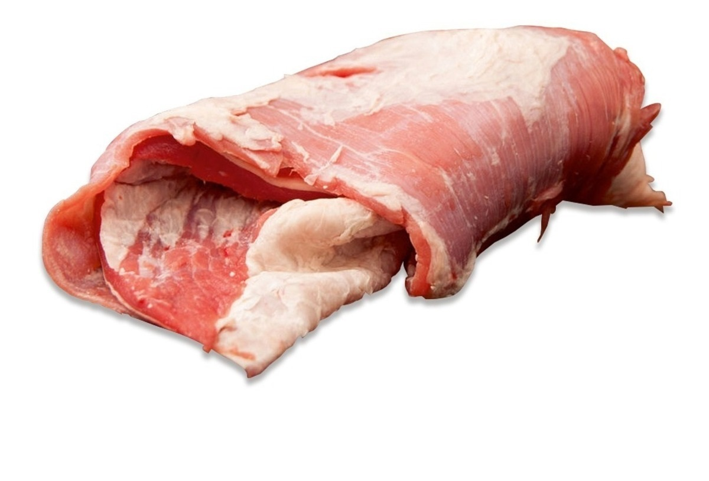
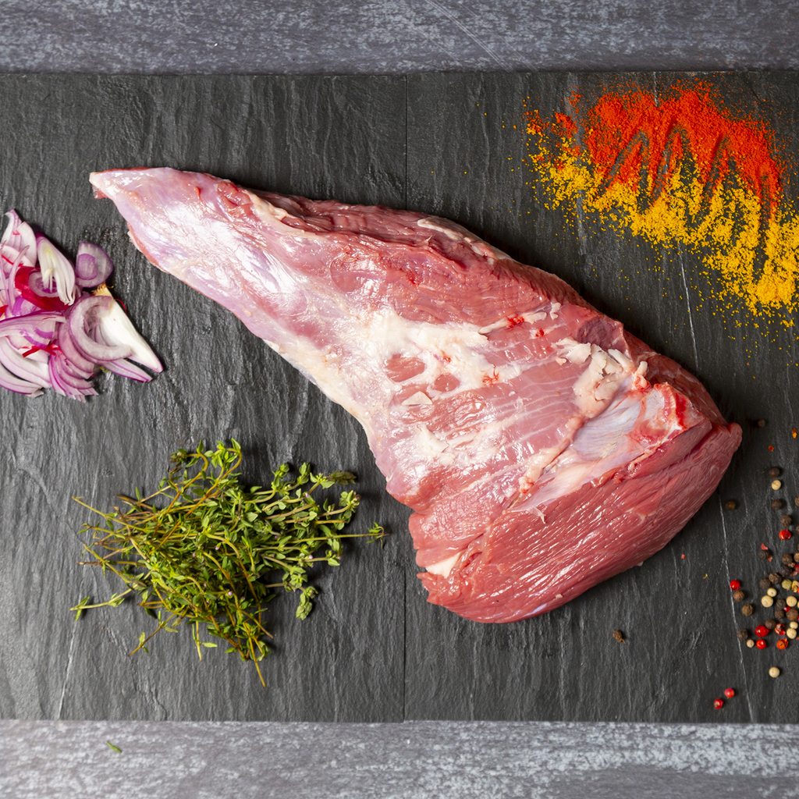
No te dejes engañar: la entraña no tiene nada que ver con las vísceras. Este es un corte de carne muy noble, jugoso y delicioso que definitivamente tienes que probar.
Y hablando de cortes... Los argentinos aprovechan todo de la vaca, ¡pero todo!
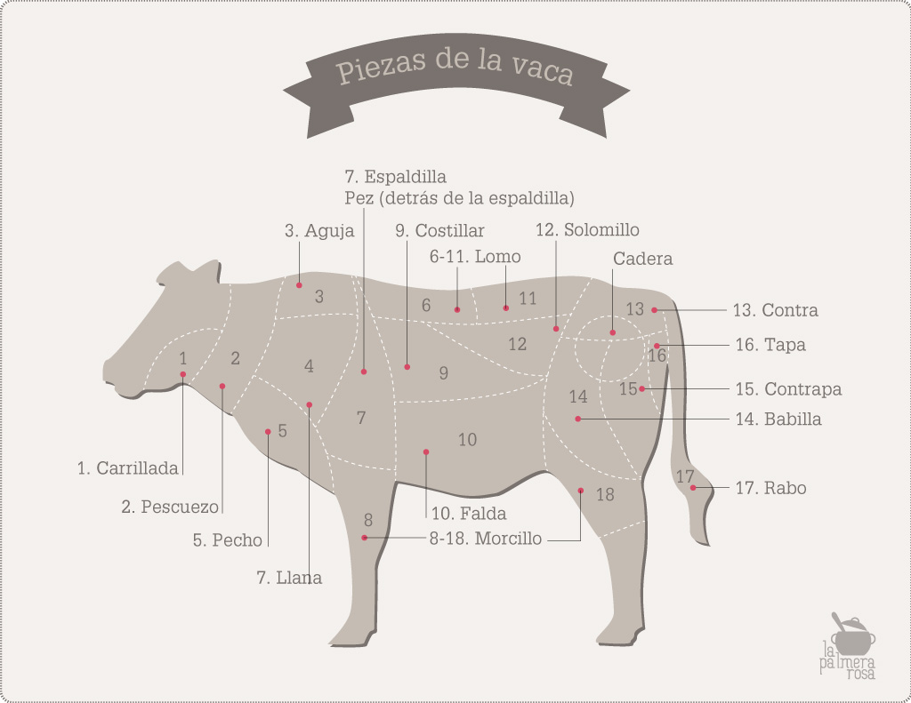
Lo peculiar es que cuando se refieren a la “carne” como tal, sólo aplica a la de origen vacuno. Para los argentinos, el pollo o el cerdo no son carne.
No sólo eso: el pescado no forma parte de su cocina. De hecho, suelen consumirlo únicamente durante la Cuaresma.
La salsa chimichurri: cuenta la leyenda que los ingleses que iban a Buenos Aires y no sabían hablar castellano y pedían salsa decían gime me curry (dame salsa). De ahí su nombre.
Un deleite de postre: la copa helada que se conoce como Don Pedro nació en el restaurante Loprete, en Monserrat. Esto se debe a que un vecino, conocido como Don Pedro, pedía siempre una bola de helado de crema con un poco de whisky. El dueño del restaurante bautizó el postre en honor a su cliente.
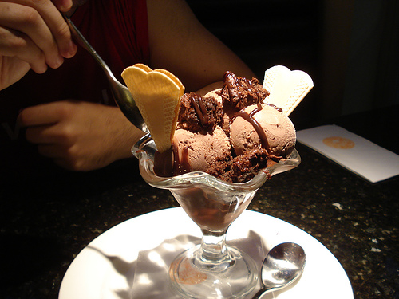
Por otro lado, el dulce de leche es el postre por excelencia y lo usan en sus postres y golosinas, como los populares alfajores.
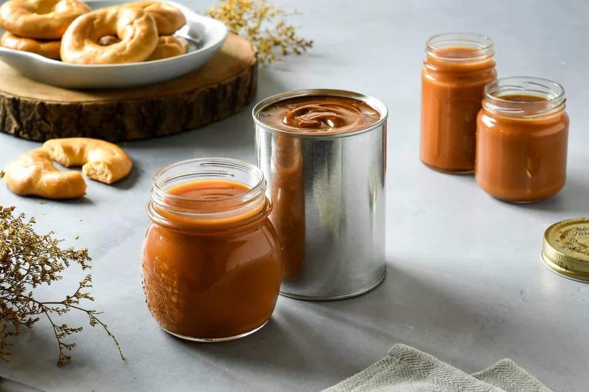
Además, Argentina disputa su lugar a nivel mundial por su excelente calidad de vino. Se trata de un Malbec de la bodega Bianchi. el cual recibió el premio Trophée al “Mejor Vino Tinto del Mundo”.
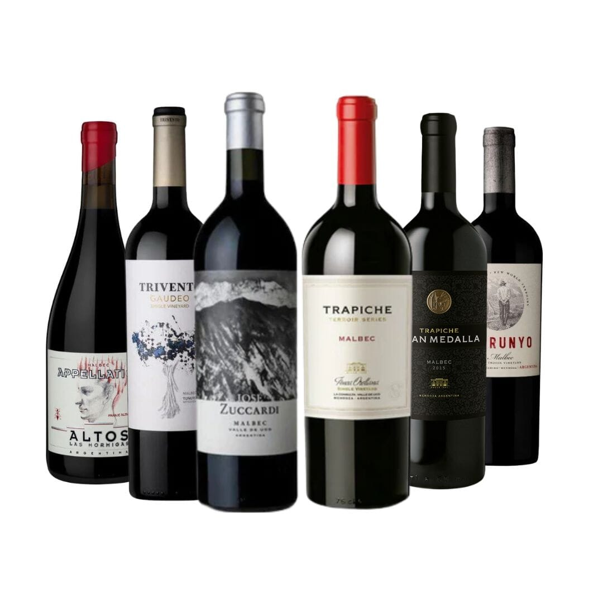
Finalmente, en Argentina celebran la Semana de la Dulzura, del 1 al 7 de julio, donde se intercambian dulces por muestras de afecto.
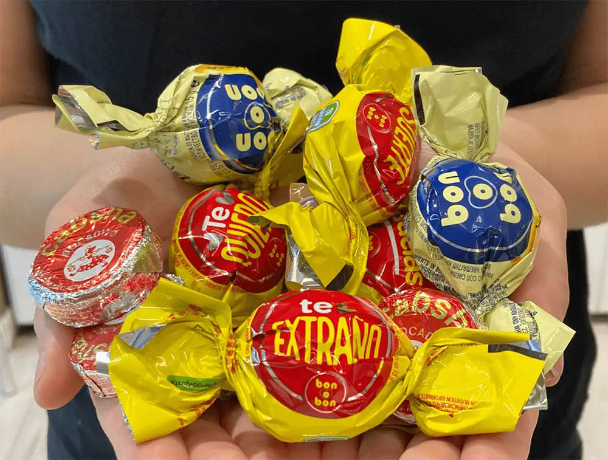
La gastronomía argentina se ubica entre las mejores del mundo, con representantes en las listas de mejores chefs y restaurantes dignos de cualquier capital europea.
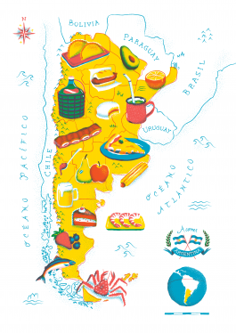
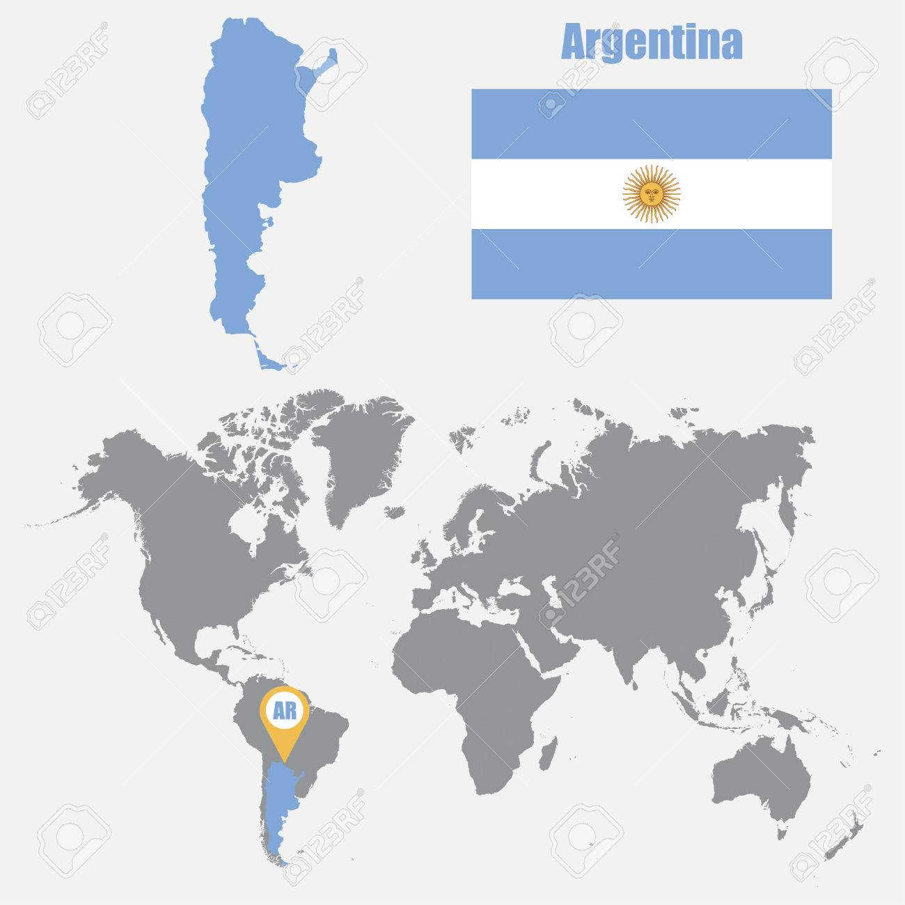
Durante mucho tiempo los protagonistas de este particular mundo solo eran conocidos por expertos, pero fueron ganando popularidad a medida que avanzaron las escuelas de chefs y se fueron estrenando sucesivos y exitosos programas dedicados a la cocina.
Lo cierto es que, gracias al fenómeno MasterChef, los cocineros argentinos están hoy en boca de todos. Íconos como Blanca Cotta y Doña Petrona marcaron el camino para que muchos decidan especializarse en el arte culinario. Su legado es tan variado que incluye en la actualidad a dueños de restaurantes, jurados de realities, conductores de tevé y estrellas en las redes.